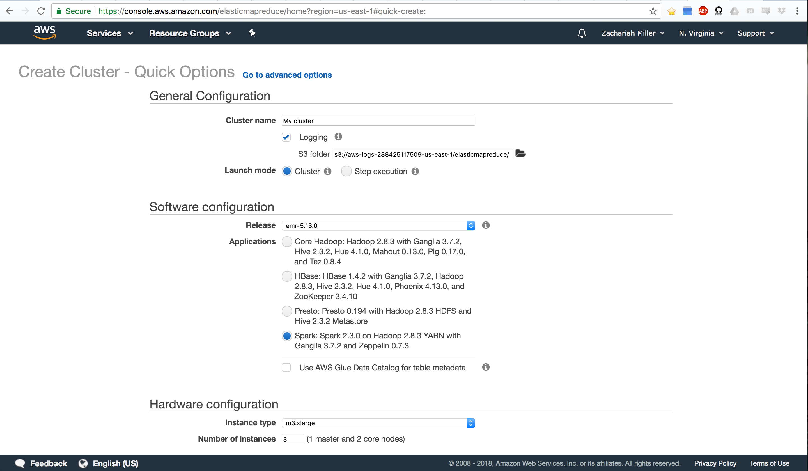
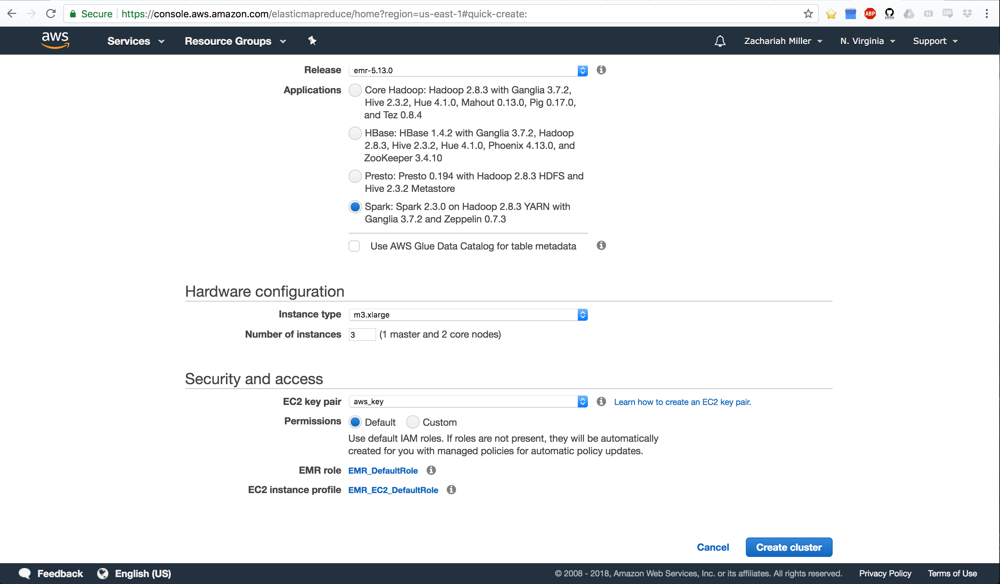
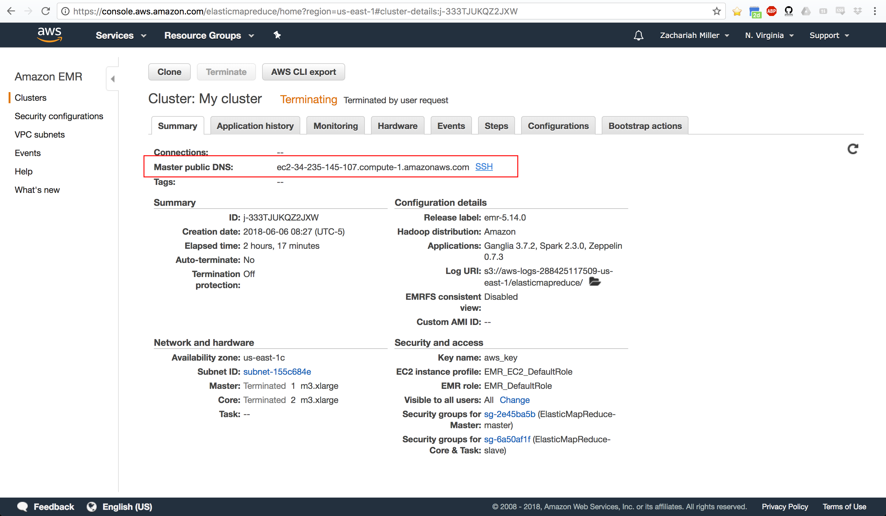
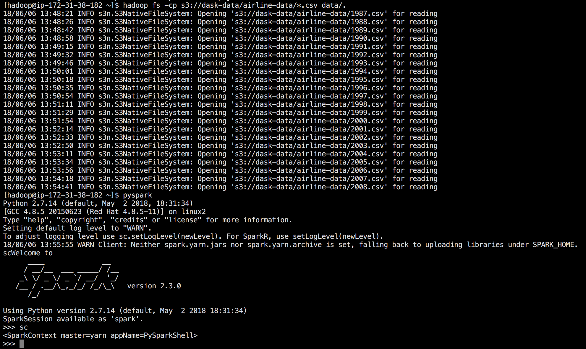
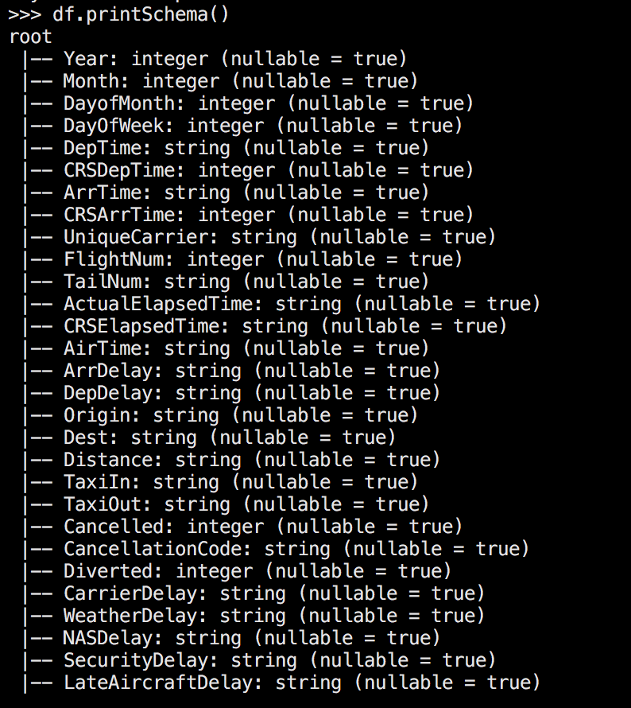
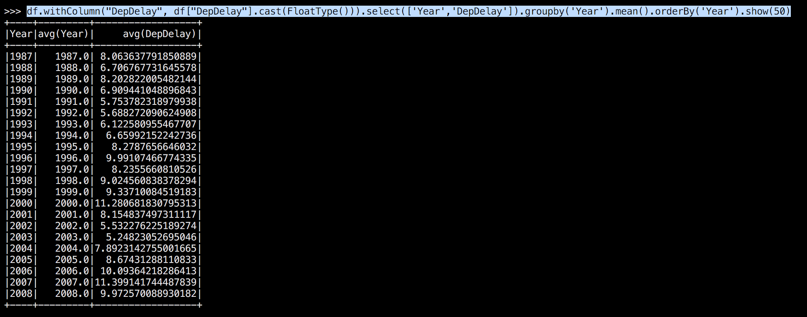
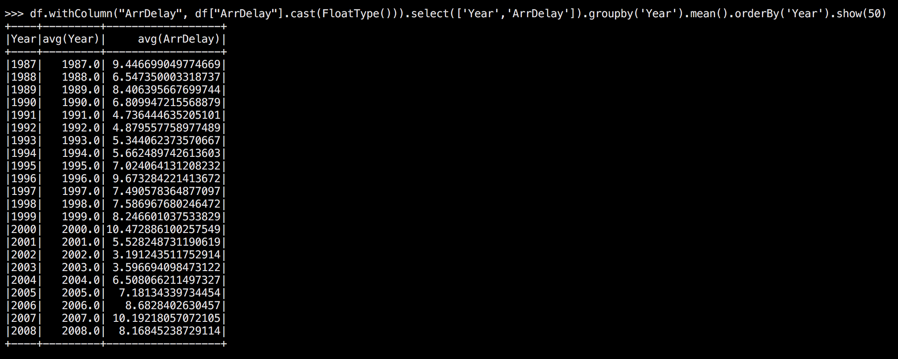

Setting up a Spark Cluster on AWS
June 13, 2018 - Spark, AWS, EMRPart 1: Getting a Cluster Ready
Our goal for today is to build our own cluster with Spark. Fortunately for us, Amazon has made this pretty simple. We’re going to get started by going to AWS.
We’re interested in Amazon’s EMR service, which stands for Elastic Map Reduce.
We’re going to setup a super simple cluster to get going. To start, go to AWS
and find the EMR section. In that section, click Create Cluster.
This should take you to a page that looks like so:

There’s quite a bit to digest here. So let’s talk about what EMR does. EMR is going to spawn several EC2 instances, tie them all together so that they can communicate, make one of them into a master node (NameNode) and the rest into slave nodes (DataNodes/WorkerNodes). It will also install HDFS and whatever tools you ask it to install (e.g. Spark, Hadoop, Hive, etc). We’re going to make a Spark cluster.
Let’s start by telling it what we want to name our cluster. Note that this cluster is going to be very short-lived, so the name isn’t super important. EMR doesn’t allow you to persist your clusters by stopping them. You ALWAYS terminate them. That’s actually a good thing - you shouldn’t be spinning up a cluster until you’re done with your basic development and code writing. You want to start with a small dataset, get all your code working, then switch to the big dataset.
Once we pick a name, note that we also are creating an S3 bucket where the cluster is going to save all of our log files and the like. We can also use this to point to a specific S3 bucket if we want to make sure we know where those files go.
Now we need to pick an install type. For simplicity, we’ll start by selecting the bottom option which is:
Spark: Spark 2.3.0 on Hadoop 2.8.3 YARN with Ganglia 3.7.2 and Zeppelin 0.7.3
This will install HDFS, Spark, Hadoop, and YARN. Which we need to get our cluster rolling. If we wanted to get fancy, we could use Zepplin which is like Jupyter Notebooks, but for big data. We won’t get fancy today.
Note that if we wanted to be more selective, we could go to advanced options and specifically ask the cluster to install certain tools instead of just selecting a suite of tools that is pre-made.
Now we’re ready for the next stage which should look like this (scrolling down the page):

Here, we’re going to tell it how many nodes we want in our cluster. For now, leave it at the default 3. The more nodes, the more expensive it is. We’re just demo-ing things, so we don’t want expensive. We’ll get 1 master node, and 2 worker nodes.
Finally, you MUST SELECT A VALID AWS KEY. You should already have this setup from your previous work with EC2. If you don’t do this, you won’t be able to log in to your cluster. If for some reason you don’t have a key, see here AWS Key Pair Creation.
Once you’ve done that, click Create Cluster and go grab a coffee. It takes
EMR 10’s of minutes to get all of that setup for you. It’s doing a lot of
installing behind the scenes. You’ll know it’s ready when it says in green,
“Waiting” at the top.
We may need to do one more thing, which is to tell our cluster that people are allowed to log-in. First, try the below code:
ssh -i ~/.ssh/aws_key.pem hadoop@*IP ADDRESS HERE*
To get your IP Address, EMR has a little link right beside the Master Public DNS that if you click it
gives you an example code for how to log-in. The SSH command in there will
show you the IP Address for your cluster. You can see where that SSH link is
here (note, your cluster should not say terminated at the top, it should say
waiting).

It will ask you if you want to connect to the remote server, type yes and
hit enter. If you’ve done everything right and your SSH is pre-configured, you should see a giant EMR
welcoming you to your new cluster.
If it just hangs there and nothing happens, we’ll need to update our SSH
rules. To do that, you’ll need to tell it that SSH is allowed. We
do that by going to the security group and adding an Inbound Rule that is an
SSH Rule on the default port (should be 22). We’ll tell it that it’s
allowed from Anywhere. That’s not very secure, and if I was doing this for
production, I’d make sure to lock things down better than that. The security
groups can be accessed from the EC2 panel. There’s more information here:
Security Groups in
EC2
Once you’ve set up the SSH rule, you should be able to run the above ssh code and see the giant EMR welcoming you home.
Part 2: Actually Using your Cluster with Spark
So at this point, we have a cluster with Spark and HDFS all ready to roll. We just need to start using it. For today, we’re going to analyze data from all the airline flights in the US from 1987-2008. That’s more than 122,000,000 flights. Our goal is to figure out the average lateness of departures and arrivals, by year.
Our first step is to get our data on our cluster. The good news is that EMR already installed HDFS (Hadoop Distributed File System) which allows us to hand our data to the cluster and ask it to parallelize it for us. Let’s load some data from an Amazon S3 bucket. To do that, we do the following:
hadoop fs -mkdir /data
hadoop fs -cp s3://dask-data/airline-data/*.csv /data/.
hadoop fs -ls /data
data. Note that HDFS is
a SEPARATE file system from your main Linux file system. You can’t just do:
ls /data, because we didn’t create a folder on Linux… we did it in HDFS.
When I do the copy, I see an output that looks like so (note this also shows the next step of getting into pyspark):

Now we’re ready to analyze the data. Let’s jump into pySpark. As a sidenote, pySpark is a wrapper around Spark that allows us to write Python like code that converts to Scala behind the scenes and then runs on our data. To get into pySpark just type:
pyspark
PySpark itself looks just like an iPython notebook. Except you should see a
big ASCII Spark logo at the top. It also is pre-built with a thing called sc
which stands for SparkContext. It’s an object that ties Python into Spark.
We’ll use that to tell Python how to interact with Spark. Our first step is to
get SparkSQL setup so we can load our CSV files. To do that, we run:
sqlContext = SQLContext(sc)
Then we want to load our data from HDFS. So we tell it we want to open a CSV and want Spark to try to guess what the schema is for our table. We can do that with:
sqlContext.read.format('com.databricks.spark.csv')\
.options(header='true', inferschema='true').load(‘hdfs:///data/*.csv')
This tells Spark to read in a csv format. It should expect a header and try to guess what the data type is for every column. We tell it to load from the HDFS file system, at the data folder (we created), and get all the CSVs there.
This will take a while and you should see a progress bar come up. Remember, it’s loading the data from all over the cluster and keeping track of where it lives. It’s also tying everything together in a big object so that I can interact with a single dataframe. Let’s look at what it grabbed:
df.printSchema()
This will show us the below output, which shows us all the columns it found, what they’re called, and what type it thinks they are.

Note that there are three columns of interest for us: ‘DepDelay’ which is the Departure Delay, ‘ArrDelay’ the arrival delay, and ‘Year’ the year in which the flight occurred. Also note… that we have a problem: the delays are currently strings, so we can’t do any mean calculations yet. We’ll need to handle that.
I’m going to assume you’re familiar with Pandas dataframes/SQL stylings from here on out. Let’s do a quick pass at analysis. First, we’ll grab our dataframe and ask it to convert the delay into a float (FloatType()), then we’ll grab just the columns we’re interested in, then we’ll group by the year, then we’ll get the mean value for the delay by year, and show it.
from pyspark.sql.types import FloatType
df.withColumn("DepDelay", df["DepDelay"].cast(FloatType()))\
.select(['Year','DepDelay']).groupby('Year').mean().orderBy('Year').show(50)
The output of that is here:

Now let’s check about arrival delays:
df["ArrDelay"].cast(FloatType()))\
.select(['Year','ArrDelay']).groupby('Year').mean().orderBy('Year').show(50)
Which gives us:

Great, those are some neat EDA reuslts. Now you’re ready to knock yourself out playing around with Spark!
Cleaning up
Once you’re done playing with the data, it’s time to clean up. First, type
quit() to leave PySpark.
Note that EMR does not allow us to “save” our cluster. We can’t just shut it down until later. We have to fully terminate it and erase everything on the cluster (Amazon doesn’t want you claiming a bunch of computers and having them hangout waiting on you to use them). So be sure you’re done with your cluster before doing the next step.
Type exit to leave the cluster. This closes your SSH connection. Finally, go
back to your AWS page, and find the active EMR cluster. Click TERMINATE.
This closes up shop, deletes all the data on HDFS, and released the computers
back to Amazon to be farmed out again.